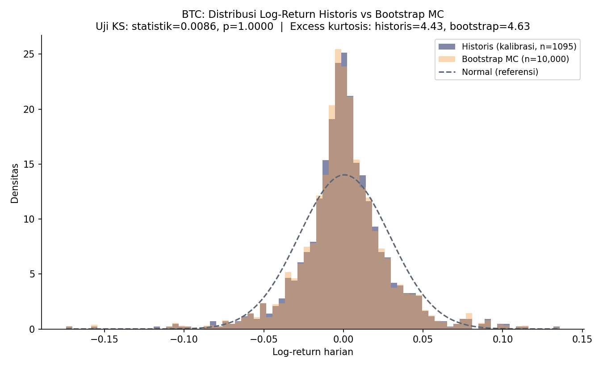
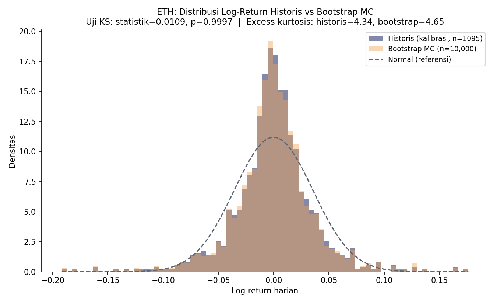
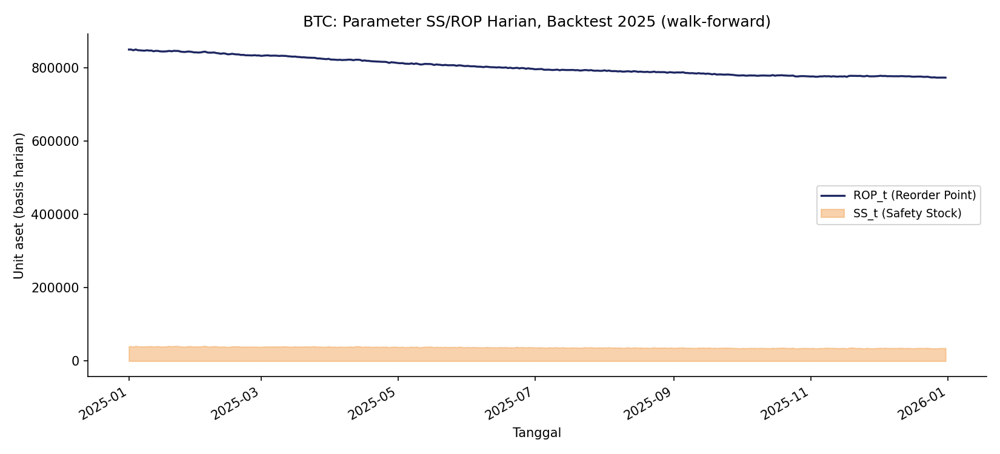
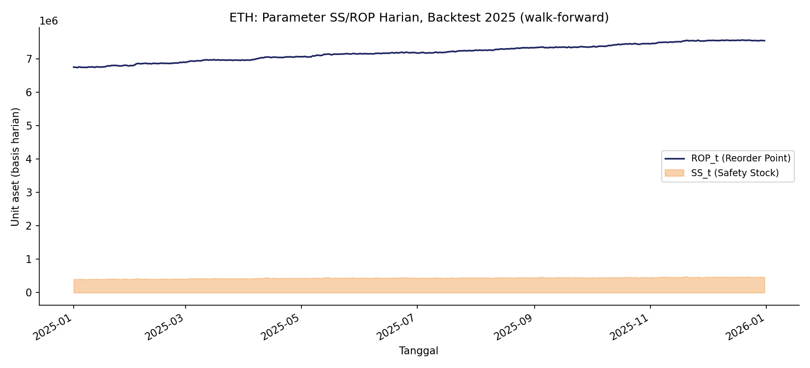
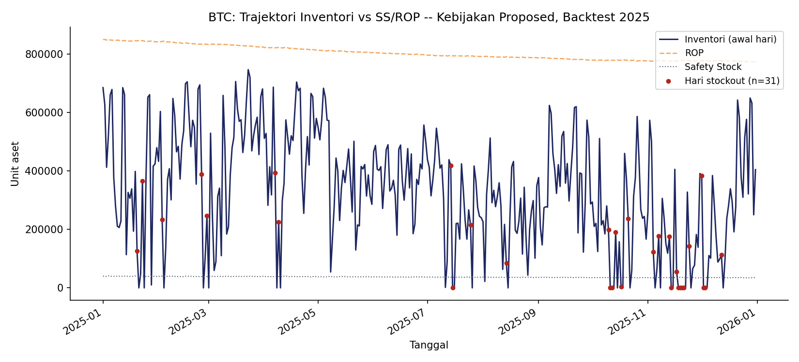
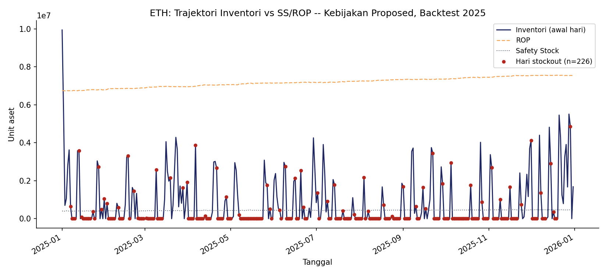
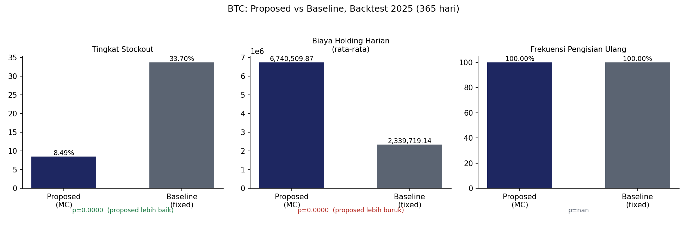
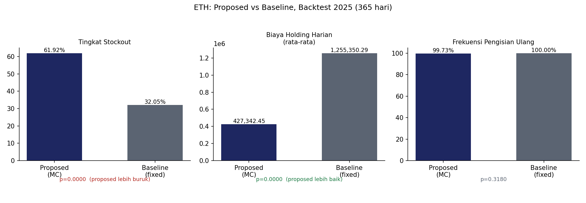

Ringkasan
Halaman ini adalah rekaman statis dari hasil Tahap 2–4 pipeline: validasi model simulasi (Kolmogorov–Smirnov + fat-tail), turunan parameter Safety Stock (SS) / Reorder Point (ROP) harian, dan backtest kebijakan proposed (Monte Carlo dinamis) versus baseline (buffer tetap) sepanjang tahun 2025 untuk BTC dan ETH.
Tahap 2 — Validasi Model Simulasi
Uji Kolmogorov–Smirnov dua-sampel antara distribusi log-return historis (window kalibrasi 2022–2024) dan distribusi hasil bootstrap Monte Carlo, plus kurtosis berlebih (excess kurtosis) untuk konfirmasi karakteristik fat-tail.
| Aset | n historis | n bootstrap | Statistik KS | p-value | Gagal tolak H0 (α=0.05) | Kurtosis historis | Kurtosis bootstrap | Fat-tail (keduanya) |
|---|---|---|---|---|---|---|---|---|
| BTC | 1.095 | 10.000 | 0.0086 | 0.99999... | Ya | 4.43 | 4.63 | Ya |
| ETH | 1.095 | 10.000 | 0.0109 | 0.99971 | Ya | 4.34 | 4.65 | Ya |


Tahap 3 — Turunan Safety Stock / Reorder Point
Parameter SSt dan ROPt dihitung harian secara walk-forward (expanding window) sepanjang periode backtest 2025, dari hasil simulasi Monte Carlo N=10.000 skenario per hari, lead time L=1 hari, tingkat layanan 95% (Z=1.645).


Tahap 4 — Backtesting & Validasi
Kebijakan proposed (SS/ROP dinamis Monte Carlo) dibandingkan terhadap baseline (buffer tetap 110% dari rata-rata volume rolling 30 hari) pada 365 hari perdagangan 2025, per aset. Kriteria superioritas proposal: stockout rate DAN biaya holding harus signifikan lebih rendah secara bersamaan (paired t-test, α=0.05).
Tabel ringkasan metrik
| Aset | Metrik | Proposed | Baseline | p-value | Signifikan | β elastisitas | Exponent clip kena |
|---|---|---|---|---|---|---|---|
| BTC | Stockout rate | 8,49% | 33,70% | 1,18×10⁻²³ | Ya (proposed lebih baik) | -1,0552 | 0 |
| BTC | Biaya holding harian (rata-rata) | 6.740.510 | 2.339.719 | 6,16×10⁻¹¹⁰ | Ya (proposed lebih buruk) | -1,0552 | 0 |
| BTC | Restock frequency | 100,00% | 100,00% | — | bukan kriteria | -1,0552 | 0 |
| ETH | Stockout rate | 61,92% | 32,05% | 6,97×10⁻³⁰ | Ya (proposed lebih buruk) | -1,0839 | 0 |
| ETH | Biaya holding harian (rata-rata) | 427.342 | 1.255.350 | 2,30×10⁻⁵¹ | Ya (proposed lebih baik) | -1,0839 | 0 |
| ETH | Restock frequency | 99,73% | 100,00% | 0,318 | tidak signifikan | -1,0839 | 0 |
Trajektori inventori vs SS/ROP (kebijakan proposed)


Perbandingan proposed vs baseline


total_stockout_amount dan metrik absolut lainnya memakai volume
gabungan multi-bursa (proksi demand dari data yfinance), bukan order book satu
CEX riil — jangan dikutip sebagai ukuran reserve exchange tertentu. Yang
bermakna secara statistik adalah perbandingan proposed-vs-baseline, bukan angka
absolutnya.
Alat operasional (tidak di-host di halaman ini)
Dua alat operasional dari Tahap 5 memakai data live dari Yahoo Finance dan butuh runtime Python — keduanya tidak bisa berjalan di GitHub Pages (hosting statis saja), jadi ditautkan sebagai layanan terpisah:
- Dasbor interaktif (input inventori → rekomendasi restock real-time) — deploy di Streamlit Community Cloud. Tautan akan ditambahkan di sini setelah repo di-deploy.
-
Alat CLI (
scripts/Tahap_5_Prototipe_Pelaporan/01_decision_tool_cli.py) — dijalankan dari terminal pada mesin dengan akses internet; lihat INSTRUCTIONS.md.